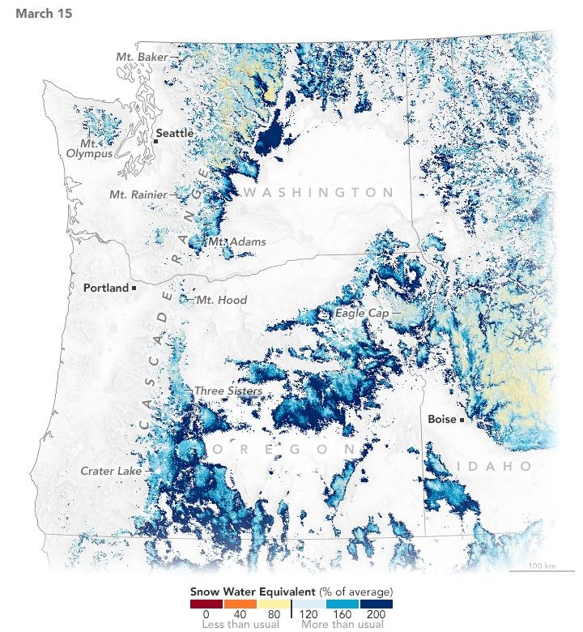

Western Mountain Snow Melts Fast and Early
The Pacific Northwest is one of many regions reliant on the winter mountain snowpack to sustain ecosystems and satisfy a host of water needs during drier times of the year. After two winters of meager accumulations, winter 2024-25 brought healthy snow totals to the mountains of Washington and Oregon. By mid-March, the region’s snowpack was sitting above average.
Then the seemingly normal situation turned unusual. Above-average temperatures and below-average precipitation levels throughout April and May made quick work of melting much of the winter’s snow. According to a NOAA special report on snow drought, the rapid melt observed in the Pacific Northwest, as well as other parts of the mountain west, was “not normal.”
These maps illustrate the changes in the Pacific Northwest snowpack in spring 2025. They show estimates of snow water equivalent (SWE)—a measure of how much water you would get if all of the snow in a given area melted at once—as a percentage of the 2001-2021 average. On March 15 (left), SWE was near or above average in most places. Where snow remained on May 26 (right), SWE had dropped significantly below average.
To derive these estimates, researchers at the Institute of Arctic and Alpine Research (INSTAAR) combined data from instruments on NASA’s Aqua, Terra, and Landsat satellites, ground-based snow sensors, and a data assimilation model called the Land Information System.
According to the INSTAAR estimates, snow water equivalent across the Pacific Northwest region decreased from about 120 percent of average in mid-March to approximately 45 percent in late May. Such a sharp decline during that time is “bizarre to see,” said Noah Molotch, a mountain hydrologist at INSTAAR and NASA’s Jet Propulsion Laboratory.
A large snowpack will tend to persist later into the spring. At that point, it can melt quickly when more solar energy is reaching Earth’s surface, explained Molotch. “This year it melted quite early and fast,” he said, an unusual combination.
In Washington, after the snowpack peaked on March 24, the central and northern Cascades proceeded to melt out two to four weeks earlier than usual, according to the state’s Department of Ecology. The early depletion of mountain snow and low spring precipitation prompted the agency to declare a drought emergency in 22 of the state’s watersheds. Officials expect that strained resources will affect water supply for agriculture and streamflow that sustains fish habitat in the summer months. Soils and vegetation can also dry out faster after the snow’s rapid disappearance, increasing the potential for wildland fires.
Other parts of the western U.S. saw rapid loss of snowpack in 2025 as well. Late-spring snow deficits were especially pronounced in Colorado, Utah, and New Mexico, for example, a trend illuminated by the INSTAAR estimates. The team has built on nearly 15 years of monitoring snow conditions in the Sierra Nevada and southern Rockies to cover the entire western U.S. for the first time in 2025.
Throughout each melt season, they have provided biweekly periodic reports to water managers, government agencies, tribes, and other stakeholders, predominantly in California and Colorado. Now that footprint is growing. “We want to find ways to more deeply engage with people in the Pacific Northwest,” Molotch said, “the water management community in particular.”